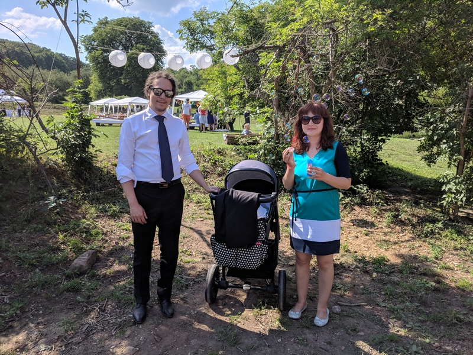
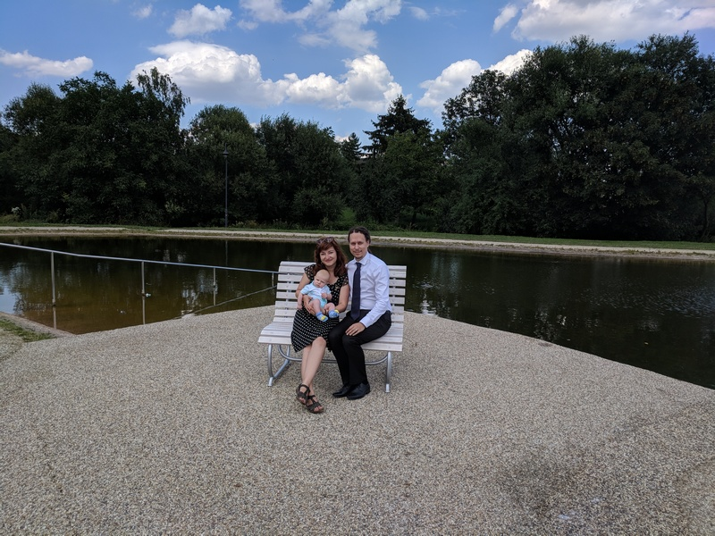
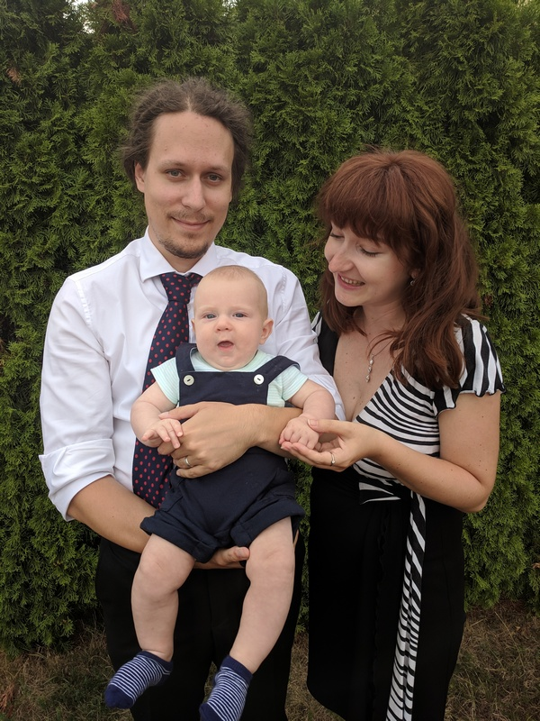

Konečně jsem si našla chvilku, abych zavzpomínala a zrekapitulovala naše letošní léto. Tolik zážitků! Tři svatby mých nejmilejších - jedna hezčí než druhá. Pár hudebních festivalů, absolvovaných dokonce i s Olím. Bezpočet krásných výletů a procházek zalitých sluncem. Aniččiny a Olího křtiny a jeho první setkání s tetou a strýcem z Ameriky. Moje třicetiny… Na co vzpomínat dřív :-)?
Tohle léto procházkám s kočárkem opravdu přálo. Deštivé dny bych spočítala na prstech, byli jsme s Olím venku v jednom kuse. Tak jen na ukázku pár našich oblíbených vycházkových destinací :-)…

A co teprv letošní svatební sezóna! Abychom se měli neustále na co těšit, svatby našich přátel byly rovnoměrně rozvrženy, na každý měsíc jedna :-) Vzpomínáme rádi na každou z nich - Terezčin a Ottíkův “fesťák” pod širým nebem v Třebovli, rovněž open air svatbu Míšy a Evky na statku v Honěticích i na svatbu Chropyňáků Pavči s Mirou, kteří dojeli na obřad stylově na mašinách ;-)

Fesťák v Třebovli

Na statku v Honěticích

Na svatbě Chropyňáků
Podnikali jsme celé léto spoustu výletů, ale snad ze všeho nejradši vzpomínám na vytoužený výlet na Karlštejn, kam mě Péťa vzal k mým třicetinám. A potkali jsme tam Pavla Zedníčka :-D

Měli jsme to zkrátka nabité. Takže občas bylo moc fajn probudit se ráno s pocitem, že nemusíme vůbec nic :-)…

Jak jste si léto užívali vy? Přestože na podzim a zimu jsem se nikdy moc netěšila, věřím, že si s Olím najdeme způsob, jak si to nadcházející období udělat co nejvíc pestré a za čtvrt roku (v častější intenzitu článků “v obrazech” už jsem přestala věřit :D) zase nebudu vědět, kterou fotku sem vybrat dřív…
Komentáře (1)
Komentáře jsou uzavřené.